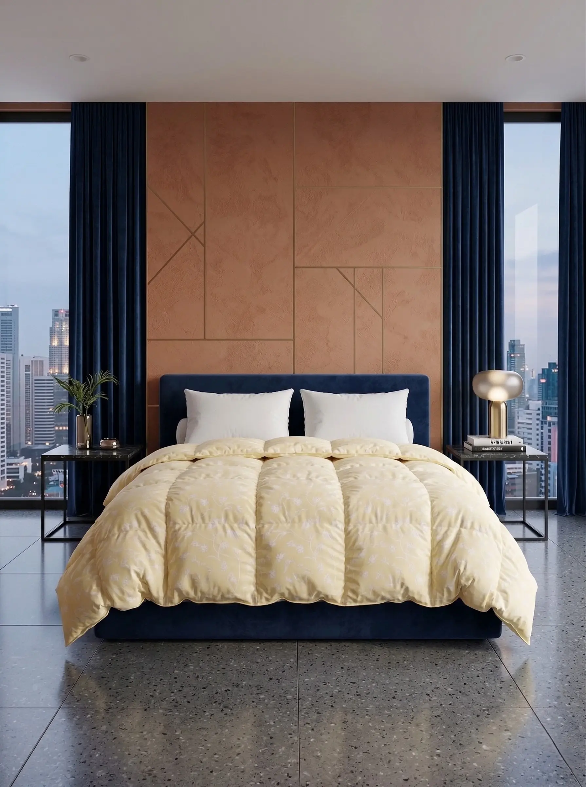
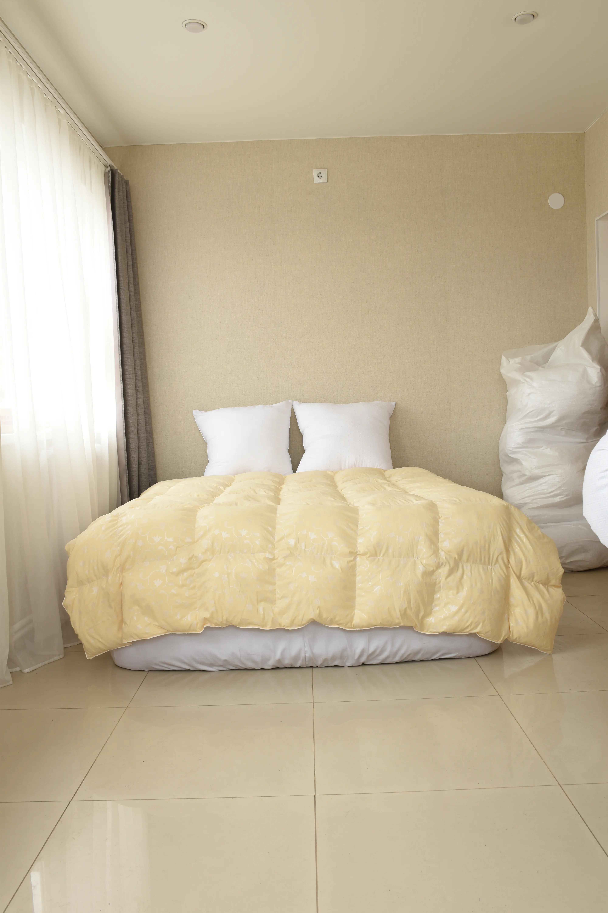
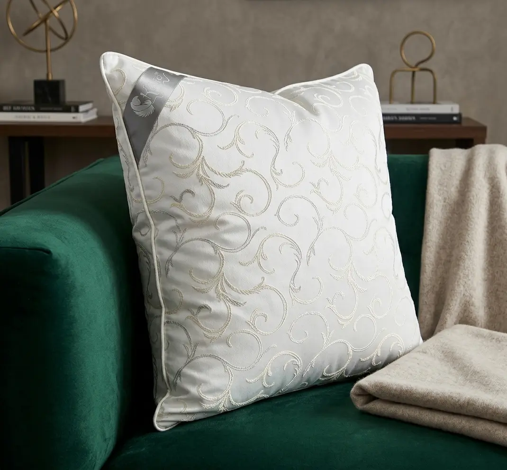
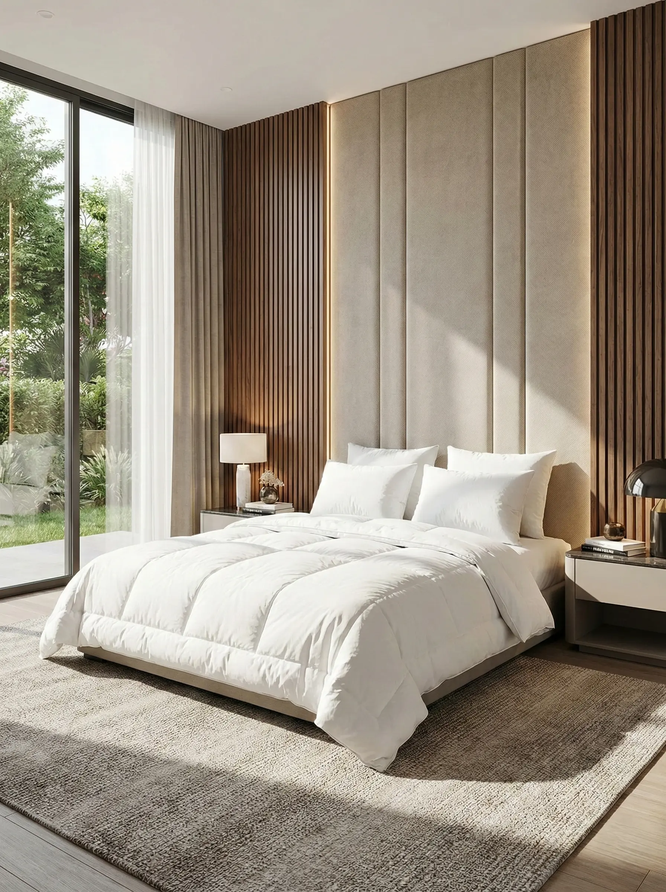
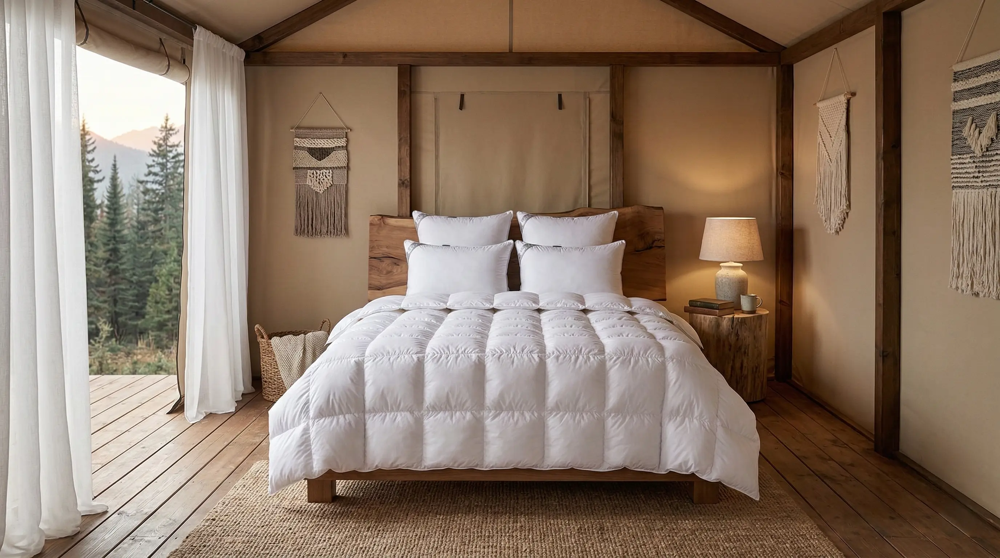
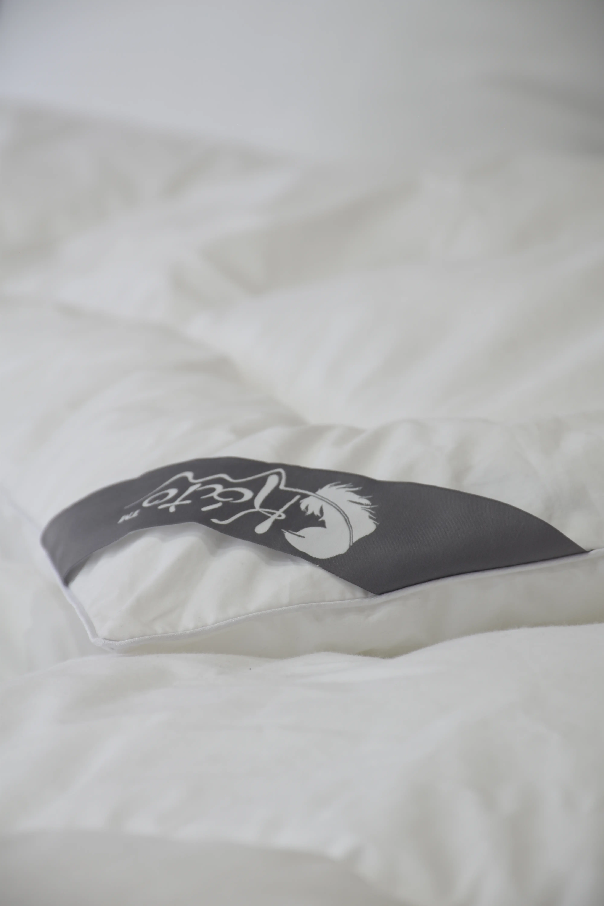
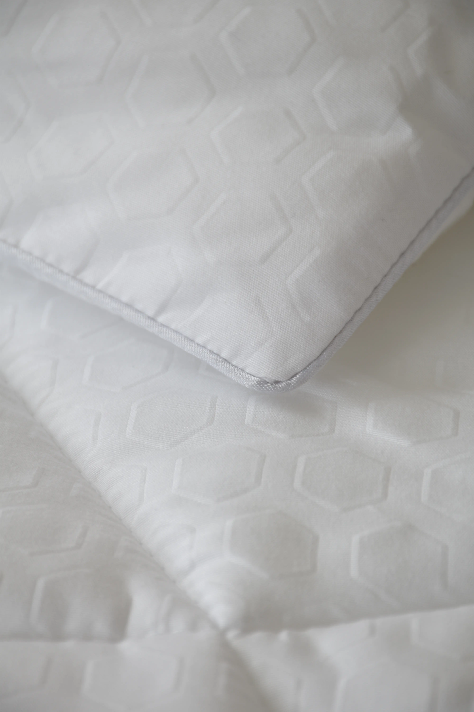

Загрузка моделей...
Используйте мышь или пальцы для вращения и зума
Загрузка моделей...
Обработка, исправление, редизайн и цветокоррекция фото. Двигайте ползунок, чтобы увидеть разницу.






